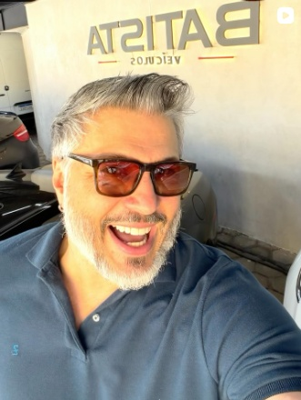

BATISTA VEÍCULOS · SÃO JOÃO DEL REI
Seu próximo
carro. Sua
próxima história.
Carros, motos e uma conversa de perto para encontrar o que combina com você.

DO INSTAGRAM PARA A SUA GARAGEM
Você viu no perfil.
Encontre aqui.
Carros e motos anunciados pela Batista, reunidos em um só lugar.
Sobre os anúncios: imagens e informações foram extraídas das publicações mostradas nos prints enviados. Os valores podem ter mudado e os veículos podem já ter sido vendidos. Confirme os detalhes com a loja. As fotos têm a resolução dos prints.
O JEITO BATISTA DE ESTAR PERTO
Oportunidades, dicas
e bastidores da loja.
A conversa começa no Instagram. Acompanhe o que acontece por lá.
Imagens das publicações enviadas para esta prévia. Acesse o perfil para assistir aos vídeos e consultar as publicações completas.
DEL REI · MG
BATISTA VEÍCULOS
Uma loja da cidade.
Uma conversa
com você.
Compra, venda, troca e financiamento em São João del Rei. Encontre possibilidades para o seu próximo carro ou a sua próxima moto e converse com a Batista sobre o que você procura.
Quer comprar?Encontre o anúncio e fale sobre o veículo.
Vai trocar?Converse com a loja sobre o seu veículo.
Pensa em financiar?Consulte as condições diretamente com a equipe.
DO ONLINE PARA A LOJA
O próximo passo?
Vamos conversar.
Confirme as informações do anúncio e combine sua visita com a Batista.
Avenida Josué de Queiroz, 1995
São João del Rei · MG · 36305-144